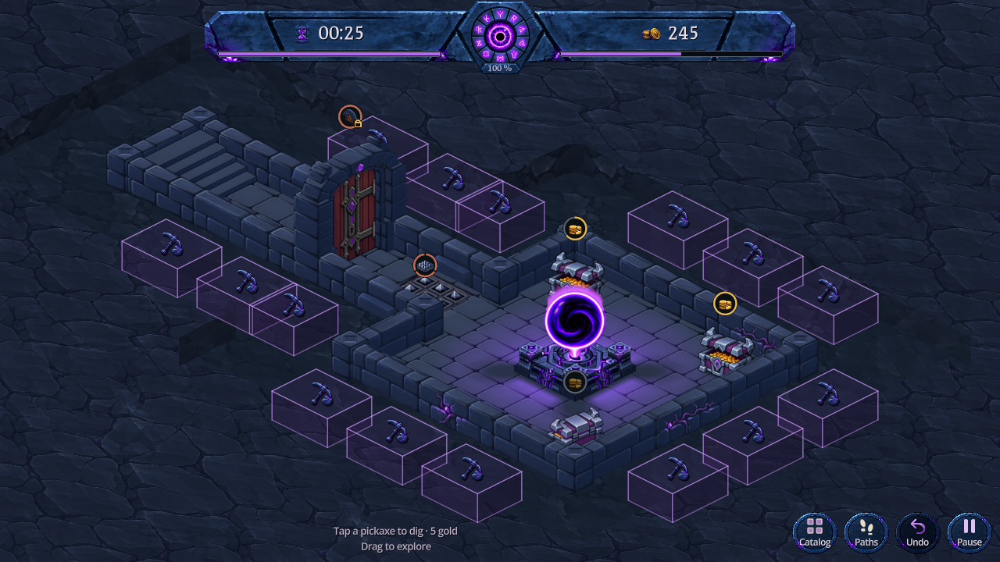

Le découpage de la roche passe de 0,90 à 1,20 case autour du donjon. Les cubes reculent avec le bord extérieur de ce dégagement : leur largeur, leur profondeur et leur hauteur restent identiques à la version précédente. L’icône sombre est conservée.

Capture Godot · 1280 × 720 · Dégagement élargi
Un appui sur un cube creuse toujours la case correspondante pour 5 pièces. Les murs et les indicateurs de statut ne deviennent pas des cibles de creusement. Voir après un creusement · Voir l’appui.
Proposition isolée dans DigBlocksPreview.tscn, sans lecture ni écriture des sauvegardes du joueur. L’élargissement n’est pas encore appliqué à la scène de jeu principale.
La roche est réellement découpée plus loin : ce n’est pas une ombre ajoutée. Le déplacement du repère est calculé à partir de l’élargissement et de ses voisines excavées ; son identifiant de case reste inchangé. La grille du donjon, les dimensions des murs et la caméra restent identiques. Aucune nouvelle texture.
337 contrôles natifs réussis : dimensions comparées au code historique, translation sans déformation, hauteur, terrain, appui sur le dessus et sur une face, coût unique, déplacement de caméra et annulation. 7 contrôles de recouvrement réussis : comparaison des pixels opaques de maçonnerie avec et sans guides, et protection des appuis, dans trois formats. Le même contrôle de pixels échoue sur l’ancien placement. Les franges transparentes des sprites sont exclues de la comparaison.
Reproduction : godot --path . --script res://tools/verify_dig_clearance.gd, puis godot --path . --script res://tools/capture_dig_blocks.gd. Captures Godot inspectées en bureau, paysage et portrait. Les tests couvrent le donjon d’essai, son extension par un creusement et l’annulation ; pas toutes les configurations possibles, ni de téléphone physique.